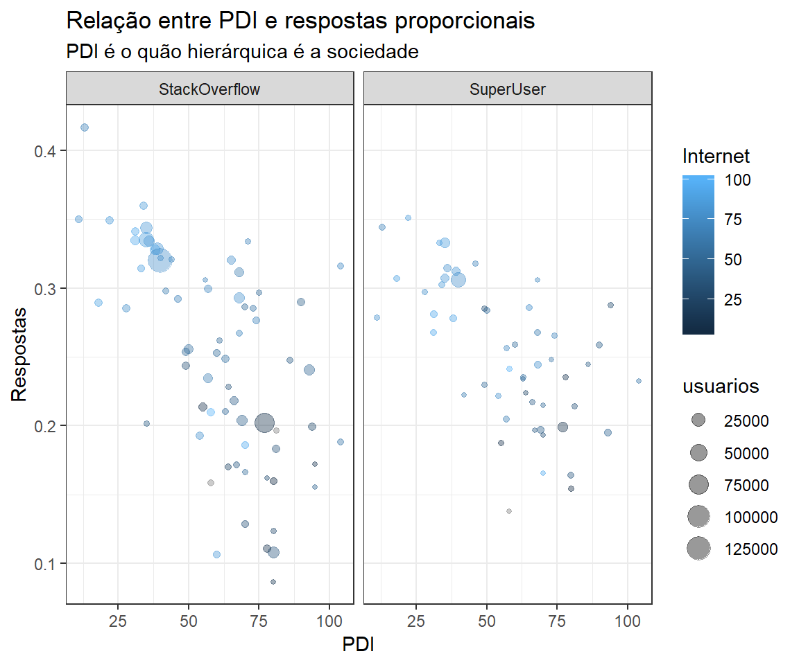
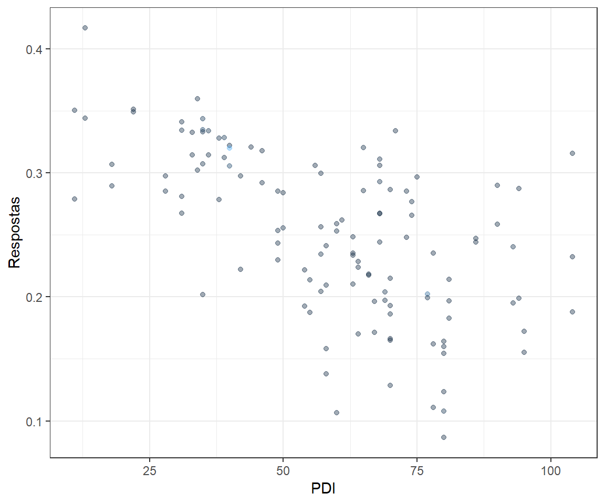
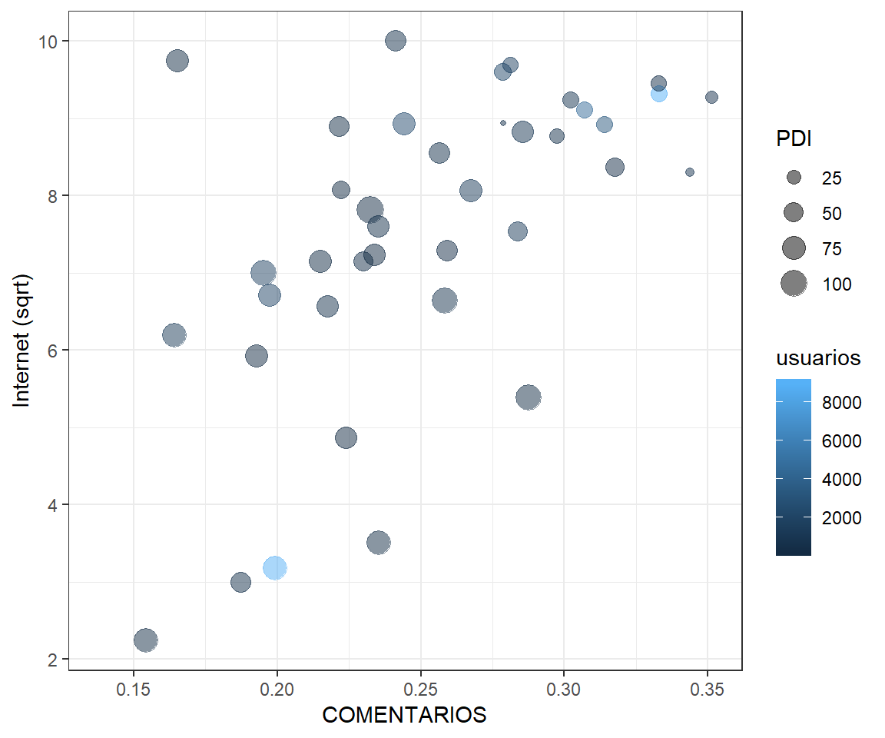
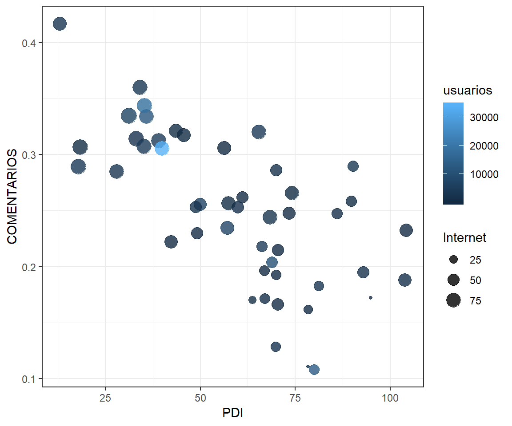
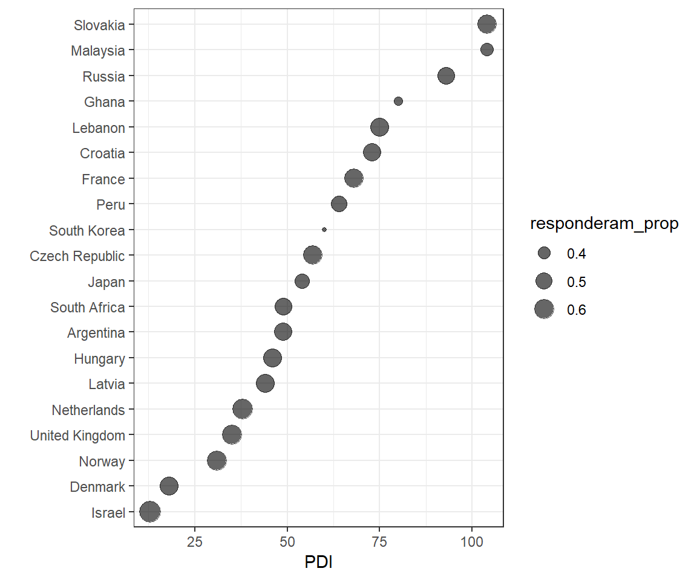

Analise cultura e comentarios no StackOverflow e SuperUser
Mateus de Lima Oliveira
30 de abril de 2019
dados = read_csv(
here::here("data/participation-per-country.csv"),
col_types = cols(
.default = col_double(),
site = col_character(),
country = col_character(),
geo = col_character(),
four_regions = col_character(),
eight_regions = col_character(),
six_regions = col_character(),
`World bank income group 2017` = col_character()
)
) %>%
filter(usuarios > 200)
glimpse(dados)## Observations: 121
## Variables: 21
## $ site <chr> "StackOverflow", "StackOverflow",…
## $ country <chr> "Argentina", "Australia", "Austri…
## $ PDI <dbl> 49, 36, 11, 80, 65, 69, 70, 39, 6…
## $ IDV <dbl> 46, 90, 55, 20, 75, 38, 30, 80, 2…
## $ MAS <dbl> 56, 61, 79, 55, 54, 49, 40, 52, 2…
## $ UAI <dbl> 86, 51, 70, 60, 94, 76, 85, 48, 8…
## $ usuarios <dbl> 2798, 12313, 2518, 2558, 4275, 10…
## $ responderam_prop <dbl> 0.5357398, 0.6133355, 0.6310564, …
## $ perguntaram_prop <dbl> 0.5210865, 0.5897832, 0.5933280, …
## $ editaram_prop <dbl> 0.09256612, 0.14699911, 0.1493248…
## $ comentaram_prop <dbl> 0.25339528, 0.33395598, 0.3502780…
## $ GNI <dbl> NA, 59570, 48160, 840, 44990, 116…
## $ Internet <dbl> 51.0, 79.5, 79.8, 5.0, 78.0, 45.0…
## $ EPI <dbl> 59.02, NA, 63.21, NA, 61.21, 49.9…
## $ geo <chr> "arg", "aus", "aut", "bgd", "bel"…
## $ four_regions <chr> "americas", "asia", "europe", "as…
## $ eight_regions <chr> "america_south", "east_asia_pacif…
## $ six_regions <chr> "america", "east_asia_pacific", "…
## $ Latitude <dbl> -34.00000, -25.00000, 47.33333, 2…
## $ Longitude <dbl> -64.00000, 135.00000, 13.33333, 9…
## $ `World bank income group 2017` <chr> "Upper middle income", "High inco…Estamos interessados na relação entre quanto as pessoas de diferentes países comentam em questões dos outros. A proporção das pessoas do país que comentou nas questões de outros está medido na variável comentaram_prop.
Considerando essa variável, queremos examinar a relação entre ela e o quão hierárquicas são as relações em um país (PDI). Queremos também levar em conta o quanto as pessoas daquele país têm acesso à Internet (Internet) e qual o tamanho da base de dados que detectamos daquele país (usuarios).
Examinando essa relação
Faça uma visualização que usa os princípios de eficácia no projeto de visualizações para facilitar as comparações que você acha que são as mais importantes para entendermos esse contexto.
Foram utilizados pontos para representar a relação entre a quantidade de respostas proporcionalmente, e o PDI (que representa o quão hierarquica é uma sociedade) em cada país. Com isso, da para ver mais facilmente como se encontra a relação das variaveis e quais são os paises que mais se destacam da tendencia. Cada ponto do país tem um tamanho e cor diferente para mostrar a quantidade de usuarios e o quanto internet é usada, proporcionalmente.
dados %>%
ggplot(aes(x = PDI, y = comentaram_prop,color = Internet, size = usuarios))+
geom_point(alpha = 0.4)+
facet_grid(~ site)+
labs(
title = "Relação entre PDI e respostas proporcionais",
subtitle = "PDI é o quão hierárquica é a sociedade",
x = "PDI",
y = "Respostas"
)
Pode-se observar que há uma tendência de quanto maior o PDI, menor a quantidade de respostas proporcionais por país. Outro constatação interessante é observar que as cores dos pontos ficam mais escuras conforme as respostas caem e o PDI aumenta, sendo assim, a utilização da internet nesses lugares também é pequena, consequentemente afetando a quantidade de usuarios dos sites.
Outras formas de ver
Em seguida, faça 5 visualizações que usem as mesmas variáveis e também pontos, mas que sejam menos eficazes que a que você escolheu acima.
1
dados %>%
ggplot(aes(x = PDI, y = comentaram_prop, size = Internet, color = usuarios))+
geom_point(alpha = 0.4, show.legend = FALSE)+
labs(
x = "PDI",
y = "Respostas"
)
2
amostraSuper = dados %>%
filter(site == "SuperUser")%>%
sample_n(40)
amostraSuper %>%
ggplot(aes(x = comentaram_prop , y = sqrt(Internet), size = PDI, color = usuarios) )+
geom_point(alpha = 0.5) +
labs(
x = "COMENTARIOS",
y = "Internet (sqrt)"
)
3
amostra = dados %>%
sample_n(50)
amostra %>%
ggplot(aes(x = PDI , y = comentaram_prop, size = Internet, color = usuarios))+
geom_jitter(alpha = 0.8) +
labs(
x = "PDI",
y = "COMENTARIOS"
)
4
amostra = dados %>%
filter(site == "StackOverflow")%>%
sample_n(25)
amostra %>%
ggplot(aes(x = PDI, y = comentaram_prop))+
geom_line()+
geom_point(aes(size = usuarios, color = Internet))+
labs(
x = "PDI",
y = "RESPOSTAS"
)
5
amostra = dados %>%
filter(site == "StackOverflow")%>%
sample_n(20)
amostra %>%
ggplot(aes(x = reorder(country, PDI) , y = PDI , color = usuarios, size = comentaram_prop))+
geom_point(alpha = 0.6)+
coord_flip()+
labs(
x = "",
y = "PDI"
)
Bônus
Inclua o continente dos países (six_regions) na visualização.
dados %>%
ggplot(aes(x = PDI, y = comentaram_prop))+
geom_point(aes( color = six_regions, size = usuarios), alpha = 0.4)+
facet_grid(~ site, scales = "free_y")+
labs(
title = "Relação entre PDI e respostas proporcionais",
subtitle = "PDI é o quão hierárquica é a sociedade",
x = "PDI",
y = "Respostas"
)